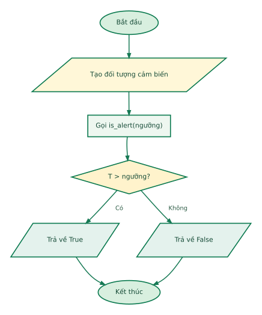

Khóa học / Mô-đun 3 / Bài 10
01 Mục tiêu và kiến thức tiên quyết
- Tạo lớp/đối tượng, phân biệt thuộc tính với phương thức.
- Dùng __init__/dataclass và thiết kế hành vi gắn với dữ liệu.
- Tổ chức mô-đun .py, tránh đặt tên file trùng với thư viện chuẩn.
Kiến thức tiên quyết: bài trước, kiến thức lập trình tương ứng.
02 Tình huống kỹ thuật
Mỗi cảm biến có mã, giá trị và đơn vị riêng. Xây dựng kiểu dữ liệu SensorReading giúp tổ chức thông tin, kiểm soát trạng thái cảnh báo và tái sử dụng mã nguồn ở dự án kỹ thuật.
Mã S1, nhiệt độ 31,5 °C, ngưỡng 30 °C.
Đối tượng cảm biến và kết quả is_alert() = True.
03 Kiến thức và thuật ngữ cốt lõi
Lớp và đối tượng
Lớp là mô tả cấu trúc/hành vi, đối tượng là thể hiện cụ thể. Thuộc tính lưu trạng thái; phương thức xử lý trên trạng thái hoặc dữ liệu truyền vào.
dataclass
Trong các bài toán ghi dữ liệu đơn giản, @dataclass giảm phần mã tạo constructor. Dùng phương thức để diễn giải giá trị, không thay thế kiểm định/hiệu chuẩn dữ liệu.
Mô-đun
Một tệp .py có thể được import như mô-đun để tái sử dụng hàm, lớp. Đoạn if __name__ == "__main__": giúp phân biệt chạy trực tiếp với import.
Kiểm thử đối tượng
Cần kiểm tra nhiều thể hiện có dữ liệu độc lập. Không đặt trạng thái khả biến chung ở biến lớp khi muốn mỗi cảm biến có danh sách riêng.
04 Xây dựng và kiểm tra thuật toán
Trước khi xem chương trình, hãy đọc dữ liệu đầu vào, chọn điều kiện rẽ nhánh hoặc lặp, rồi dự đoán kết quả. Mã giả mô tả ý nghĩa thuật toán; không phải cú pháp Python thực thi được.

Mã giả
Lần vết các bước phân tích
Đây là lần vết các dòng mã giả, không phải trình thông dịch Python. Tự kiểm tra nhánh điều kiện bằng bảng ca kiểm thử ở mục 07.
05 Chương trình Python đã kiểm tra
Đọc mã, dự đoán kết quả và chạy tệp bai_10.py trong thư mục code. Các mã bài 9 trở lên có thể cần dữ liệu đi kèm từ thư mục data.
from dataclasses import dataclass
@dataclass
class SensorReading:
ma: str
nhiet_do_c: float
def is_alert(self, nguong_c: float) -> bool:
return self.nhiet_do_c > nguong_c
s1 = SensorReading("S1", 31.5)
s2 = SensorReading("S2", 29.0)
print(s1.ma, s1.is_alert(30.0))
print(s2.ma, s2.is_alert(30.0))
06 Thử nghiệm tham số có hướng dẫn
Thay đổi đầu vào để kiểm tra trực giác và đối chiếu với kết quả dự đoán. Trình khám phá này được lập trình lại bằng JavaScript theo bài toán minh họa, không phải kết quả chạy mã Python.
07 Thực hành và kiểm thử
Thực hiện các nhiệm vụ theo thứ tự từ có hướng dẫn đến độc lập; ghi lại kết quả thực tế của chương trình và so sánh với kết quả kỳ vọng.
- Thêm trường don_vi và kiểm tra chỉ dùng °C cho quy tắc nhiệt độ.
- Chuyển lớp sang một tệp module và import vào tệp chạy thử.
- Thử tạo ba đối tượng với nhiệt độ khác nhau và lập bảng kết quả.
Bảng kiểm thử bắt buộc
| Ca kiểm thử | Dữ liệu/điều kiện | Kết quả kỳ vọng |
|---|---|---|
| Vượt ngưỡng | 31,5 > 30 | True |
| Không vượt | 29 < 30 | False |
| Bằng ngưỡng | 30 = 30 | False |
| Hai đối tượng | s1,s2 có T khác nhau | Kết quả độc lập |
08 Vận dụng vào chuyên ngành
Mô hình hóa bản ghi nhiệt độ của nhiều khu vực kho lạnh.
Mô hình hóa bản ghi nhiệt độ và điện áp từ các kênh kiểm tra ô tô (phải xét đơn vị riêng).
09 Trắc nghiệm và phản hồi
Mỗi câu có bốn phương án A/B/C/D. Chọn một phương án cho mỗi câu rồi nhấn Chấm và giải thích để xem vì sao từng phương án đúng hoặc chưa phù hợp.
Rubric tham khảo (100 điểm)
| Thành phần | Điểm |
|---|---|
| Đặc tả dữ liệu, đơn vị, giả thiết | 20 |
| Mã giả, trình tự thuật toán | 20 |
| Mã Python và tổ chức hàm/dữ liệu | 25 |
| Kiểm thử, đối chiếu, phân tích sai số | 25 |
| Giải thích và đề xuất cải tiến | 10 |
10 Nhật ký học tập và đánh dấu tiến độ
Tiến độ và ghi chép chỉ lưu trong trình duyệt hiện tại; không đồng bộ với hệ thống điểm của trường.
11 Tài liệu tham khảo và nguồn
| Nguồn | Vai trò và phạm vi sử dụng |
|---|---|
| Pythonlearn-11-Objects.pptx | C. Severance, Python for Everybody — Các khái niệm lớp và đối tượng. |
| PythonCoban_UTEHY.pdf | N. V. Hậu và cộng sự, Python cơ bản — các bài nền tảng tương ứng. |
| Python 3 Documentation | Tài liệu chuẩn của ngôn ngữ Python 3. |
Học liệu mới được viết lại theo định hướng sư phạm. Không trích lại nguyên văn hoặc phân phối các slide/sách gốc trong gói website.